Preparar tus agentesSet up your agents
Tramtai instala el CLI de cada agente, te ayuda a iniciar sesión y lo mantiene al día, solo con versiones comprobadas.Tramtai installs each agent’s CLI, helps you sign in and keeps it up to date, only with checked versions.
Cómo funcionaHow it works
- 1. InstalarInstallCon el instalador oficial del CLI, para tu usuario (o para la cuenta del servicio).With the CLI’s official installer, for your user (or for the service account).
- 2. Iniciar sesiónSign inTramtai lanza el del propio CLI y te enseña su enlace y su código.Tramtai runs the CLI’s own sign-in and shows you its link and code.
- 3. Al díaUp to dateAvisa de cada versión nueva; actualizar o desinstalar es un clic.It tells you about each new version; updating or uninstalling takes one click.
Paso a pasoStep by step
- En Agentes, abre «Otros agentes que puedes instalar» y pulsa «Instalar». La primera vez, si no tienes ningún agente listo, Tramtai te lo ofrece con «Prepara tus agentes».In Agents, open “Other agents you can install” and click “Install”. The first time, if no agent is ready yet, Tramtai offers it with “Set up your agents”.
- Tramtai sigue con el inicio de sesión: abre el enlace, escribe el código (o pega el que te den) y vuelve. Sigue solo en cuanto lo apruebas.Tramtai goes on with sign-in: open the link, enter the code (or paste the one you get) and come back. It carries on as soon as you approve.
- Al terminar, Tramtai ofrece ahí mismo «Usar mi suscripción» (antes te enseña el riesgo): hasta entonces el agente no está listo. Si no, ponle su clave de API. Antigravity va siempre con clave.When it’s done, Tramtai offers “Use my subscription” right there (it shows you the risk first): until then the agent isn’t ready. Otherwise, give it its API key. Antigravity always uses a key.
- Si hay una versión nueva, la tarjeta lo dice y «Actualizar» la instala. En «⋯» están Comprobar versión, Actualizar, Desinstalar y Ver registro.When there is a new version, the card says so and “Update” installs it. Under “⋯” you have Check version, Update, Uninstall and View log.
Qué verás en pantallaWhat you will see on screen
- Instalar desde aquíInstall from here Aquí están los agentes que aún no tienes: «Instalar» los instala con su instalador oficial y sigue con el inicio de sesión, sin abrir otra consola.Here are the agents you don’t have yet: “Install” installs them with their official installer and goes on with sign-in, with no other console.
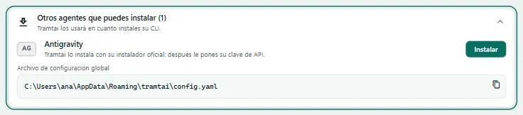
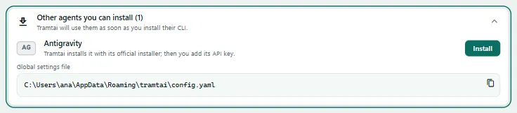
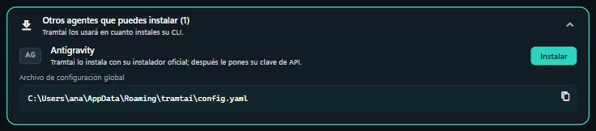
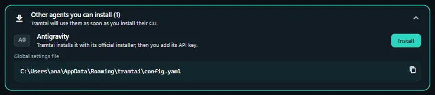
- Mantenerlos al díaKeep them up to date En la tarjeta de un agente ves si hay una versión nueva y la acción que toca; en «⋯», comprobar la versión, actualizar, desinstalar y su registro.On an agent’s card you see whether there is a new version and the action that applies; under “⋯”, check the version, update, uninstall and its log.
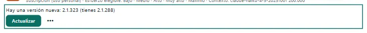
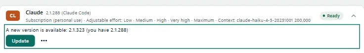
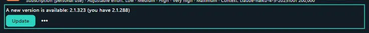
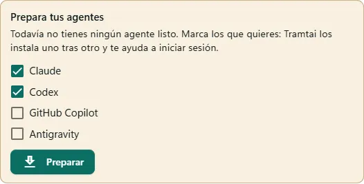
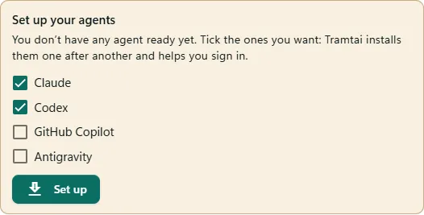
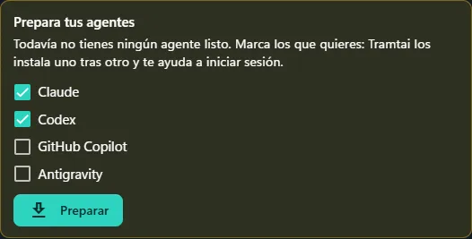
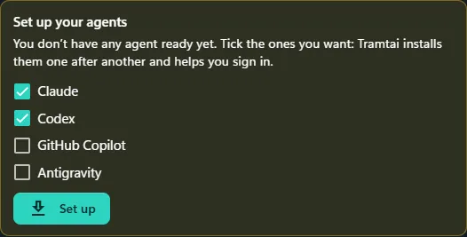
De un vistazoAt a glance
| Cómo inicia sesiónHow it signs in | |
|---|---|
| Claude CodeClaude Code | Con un enlace en tu navegador; si te da un código, lo pegas en Tramtai.With a link in your browser; if it gives you a code, you paste it into Tramtai. |
| CodexCodex | Con un código de dispositivo, que activas una vez en ChatGPT › Seguridad («Abrir los ajustes de seguridad de ChatGPT»).With a device code, which you turn on once in ChatGPT › Security (“Open ChatGPT security settings”). |
| GitHub CopilotGitHub Copilot | Con un código de dispositivo de GitHub, que escribes en github.com/login/device.With a GitHub device code, which you enter at github.com/login/device. |
| AntigravityAntigravity | No inicia sesión: solo se instala, y después le pones la clave de la Gemini API.It doesn’t sign in: it is only installed, and then you add its Gemini API key. |
Tramtai nunca lee ni guarda tu sesión: la guarda el propio CLI. De su salida solo toma el enlace y el código, y lo que pegas va al CLI sin quedar en el registro.Tramtai never reads or stores your session: the CLI keeps it. From its output it only takes the link and the code, and what you paste goes to the CLI without reaching the log.
Versiones comprobadasChecked versions
- Tramtai instala, actualiza e inicia sesión de forma automática solo con versiones de cada CLI que ya comprobó: que su instalador y su inicio de sesión siguen como espera.Tramtai installs, updates and signs in automatically only with CLI versions it has already checked: that their installer and sign-in still work as it expects.
- Con una versión sin comprobar, el inicio de sesión automático sale desactivado en ese agente, con la orden para hacerlo en una consola; instalar, actualizar o desinstalar piden confirmar.With an unchecked version, automatic sign-in is turned off for that agent, with the command to do it in a console; installing, updating or uninstalling ask you to confirm.
- El uso normal del agente sigue igual: sus peticiones funcionan con las comprobaciones de siempre. Solo se desactiva la preparación automática.Using the agent works as usual: its requests run with the usual checks. Only the automatic setup is turned off.
- La lista se pone al día sola: cada semana se prueban las versiones nuevas y se publica una lista firmada que Tramtai lee una vez al día. Una versión que entra se habilita sola.The list updates itself: every week the new versions are tested and a signed list is published, which Tramtai reads once a day. A version that gets in is turned on by itself.
Con la CLI de TramtaiWith the Tramtai CLI
- «tramtai agentes instalar claude codex» los instala y sigue con el inicio de sesión; «tramtai agentes entrar codex» solo inicia sesión. Enseñan el enlace y el código y piden el que te den.“tramtai agents install claude codex” installs them and goes on with sign-in; “tramtai agents login codex” only signs in. They show the link and the code and ask for the one you get.
- «tramtai agentes actualizar --todos» actualiza los que tienen una versión nueva; «tramtai agentes desinstalar codex» pregunta antes (con --borrar-datos, también su sesión y ajustes).“tramtai agents update --all” updates the ones with a new version; “tramtai agents uninstall codex” asks first (with --delete-data, its session and settings too).
- «tramtai agentes versiones» enseña la instalada, la última y si está comprobada (--comprobar las consulta ahora). Con --confirmar no pregunta por una versión sin comprobar ni antes de desinstalar.“tramtai agents versions” shows the installed version, the latest and whether it is checked (--check looks now). With --confirm it doesn’t ask about an unchecked version or before uninstalling.
- Si tras iniciar sesión el agente sigue con clave de API y sin clave, piden «acepto» para usar tu suscripción (antes enseñan el riesgo; --confirmar no se lo salta). En el servidor, dan la orden.If, after signing in, the agent is on an API key with none saved, they ask for “accept” to use your subscription (risk shown first; --confirm doesn’t skip it). On a server, they give the command.
- Códigos de salida: 0 listo; 1 error; 2 versión sin comprobar no confirmada o acción no posible ahora; 3 hecho, pero falta un paso (sesión, clave o suscripción) o no se pudo comprobar; 130 cancelado.Exit codes: 0 ready; 1 error; 2 unchecked version not confirmed, or an action not possible now; 3 done, but a step is missing (session, key or subscription) or it couldn’t be checked; 130 canceled.
PreguntasQuestions
¿Dónde queda instalado cada CLI?Where does each CLI get installed?
Donde lo deja su instalador oficial, para tu usuario: sirve también fuera de Tramtai. Si queda fuera del PATH del servicio, Tramtai guarda su ruta en comandos_agentes.Where its official installer puts it, for your user: it also works outside Tramtai. If it ends up outside the service’s PATH, Tramtai saves its path in comandos_agentes.
¿Necesito Node o npm?Do I need Node or npm?
No: los cuatro se instalan con su instalador oficial, sin Node. GitHub Copilot, en Windows, se descarga de GitHub y Tramtai comprueba su suma antes de instalarlo.No: all four are installed with their official installer, without Node. GitHub Copilot, on Windows, is downloaded from GitHub and Tramtai checks its checksum before installing it.
¿Puedo cerrar la pantalla mientras se instala?Can I close the screen while it installs?
Sí: la preparación sigue en el servicio y, al volver a Agentes, ves dónde va. Cualquier preparación (instalar, actualizar, desinstalar o iniciar sesión) se corta a los 15 minutos.Yes: the setup keeps going in the service and, when you come back to Agents, you see where it is. Any setup (installing, updating, uninstalling or signing in) stops after 15 minutes.
¿Por qué sale desactivado el inicio de sesión automático?Why is automatic sign-in turned off?
Porque esa versión del CLI aún no está comprobada con Tramtai. El aviso trae la orden para hacerlo en una consola, y vuelve solo cuando la versión entra en la lista.Because that CLI version hasn’t been checked with Tramtai yet. The notice has the command to do it in a console, and it comes back by itself once the version is on the list.
¿Por qué la orden para la consola lleva una ruta?Why does the console command have a path?
Si la consola no encuentra el CLI por su nombre (el instalador de Claude no toca el PATH), la orden lleva su ruta completa. En Windows va para PowerShell; en cmd, quita el «&» del principio.If the console can’t find the CLI by name (Claude’s installer doesn’t touch the PATH), the command has its full path. On Windows it’s for PowerShell; in cmd, remove the “&” at the start.
¿Y si el inicio de sesión no avanza?What if sign-in doesn’t move on?
Si el CLI escribe algo que Tramtai no reconoce, lo cancela, enseña sus últimas líneas con el enlace resaltado y la orden para la consola, y aparta esa versión hasta que la lista la confirme.If the CLI writes something Tramtai doesn’t recognize, it cancels, shows its last lines with the link highlighted and the console command, and sets that version aside until the list confirms it.
¿A qué sitios se conecta para ver las versiones?Which sites does it connect to for the versions?
Una vez al día, al sitio oficial de cada CLI (GitHub, downloads.claude.ai y el servidor de actualizaciones de Antigravity) y al release «compatibilidad» de Tramtai en GitHub. No envía datos tuyos.Once a day, to each CLI’s official site (GitHub, downloads.claude.ai and the Antigravity update server) and to Tramtai’s “compatibilidad” release on GitHub. It sends none of your data.
¿Cómo desactivo esa consulta?How do I turn that check off?
En Ajustes, «Comprobar versiones nuevas de los agentes» (v en la terminal), o con servicio.buscar_versiones_agentes: false. Siguen valiendo las versiones comprobadas que trae Tramtai.In Settings, “Check for new agent versions” (v in the terminal), or with servicio.buscar_versiones_agentes: false. The checked versions Tramtai ships with still apply.
¿Por qué no se actualiza ahora?Why won’t it update now?
Porque el agente tiene peticiones en curso: espera a que terminen y vuelve a intentarlo. Mientras se actualiza, ese agente no está disponible para peticiones nuevas.Because the agent has requests in progress: wait for them to finish and try again. While it updates, that agent isn’t available for new requests.
¿Desinstalar borra mi sesión?Does uninstalling delete my session?
No, salvo que marques «Borrar también su sesión y ajustes». Borra los archivos que dejó su instalador (ningún CLI trae orden para eso) y pide confirmar: deja de estar también fuera de Tramtai.No, unless you tick “Also delete its session and settings”. It deletes the files its installer left (no CLI has a command for that) and asks you to confirm: it’s gone outside Tramtai too.
¿Y en el modo servidor?And in server mode?
Se hace igual, con la cuenta del servicio: desde Agentes en la Web UI remota, la terminal o «tramtai-servidor agentes …». Solo el administrador. La suscripción no se acepta ahí: va con su orden.It works the same, with the service account: from Agents in the remote Web UI, the terminal or “tramtai-servidor agents …”. Administrator only. The subscription takes its own command there. Modo servidorServer mode →
En la terminal: 2 abre Agentes. i instala, s inicia sesión (y luego a usa tu suscripción), u actualiza, x desinstala (X con sus datos), y sigue, k cancela, l enseña el registro y e vuelve al código.In the terminal: 2 opens Agents. i installs, s signs in (then a uses your subscription), u updates, x uninstalls (X with its data), y continues, k cancels, l shows the log and e goes back to the code.